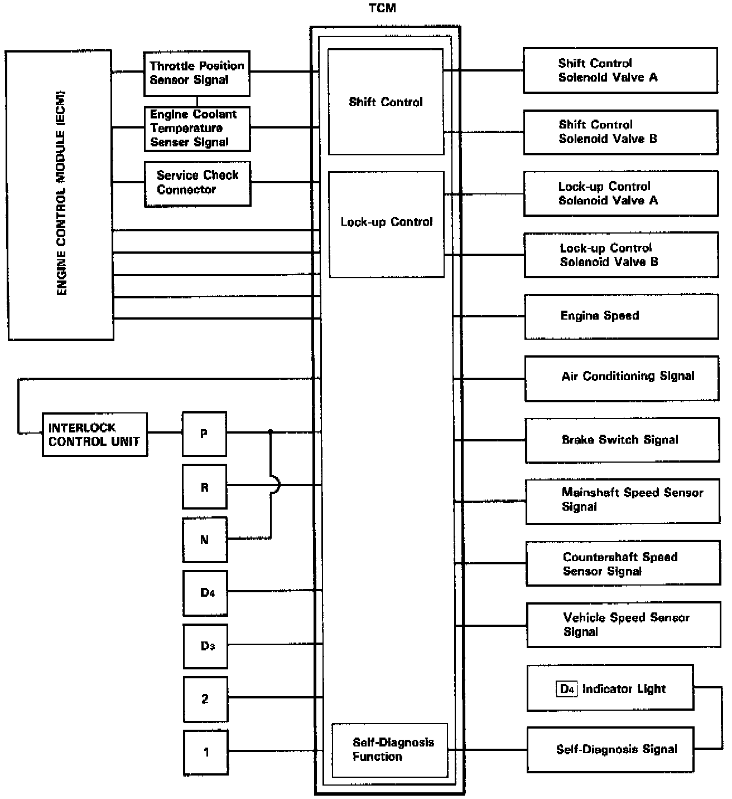
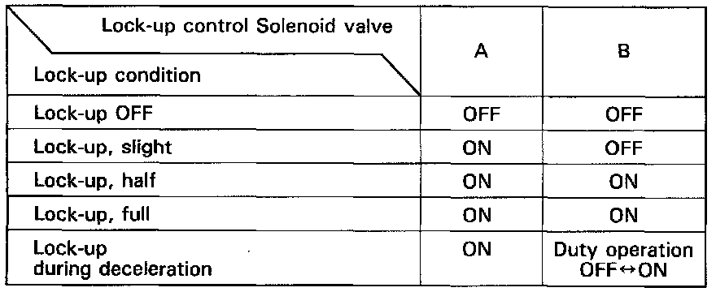
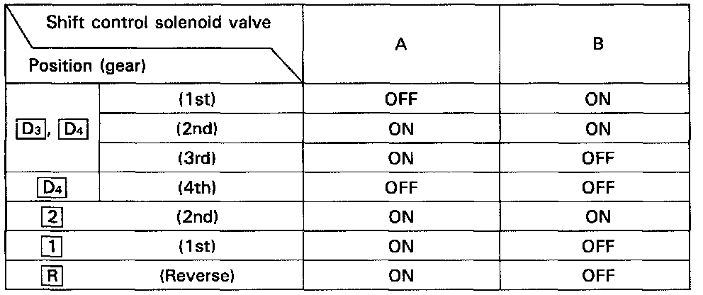
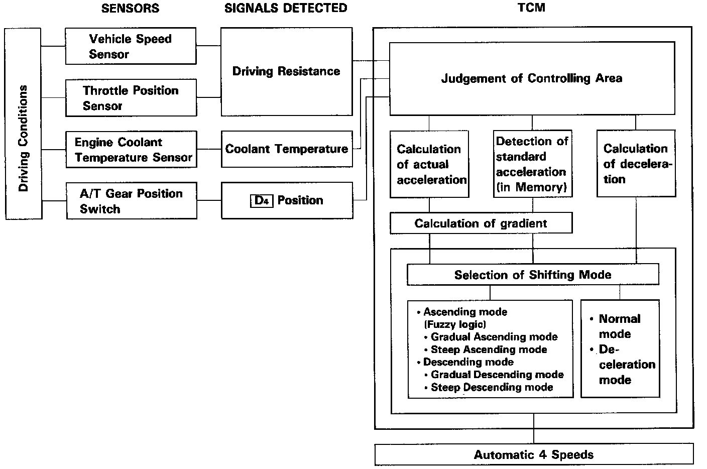
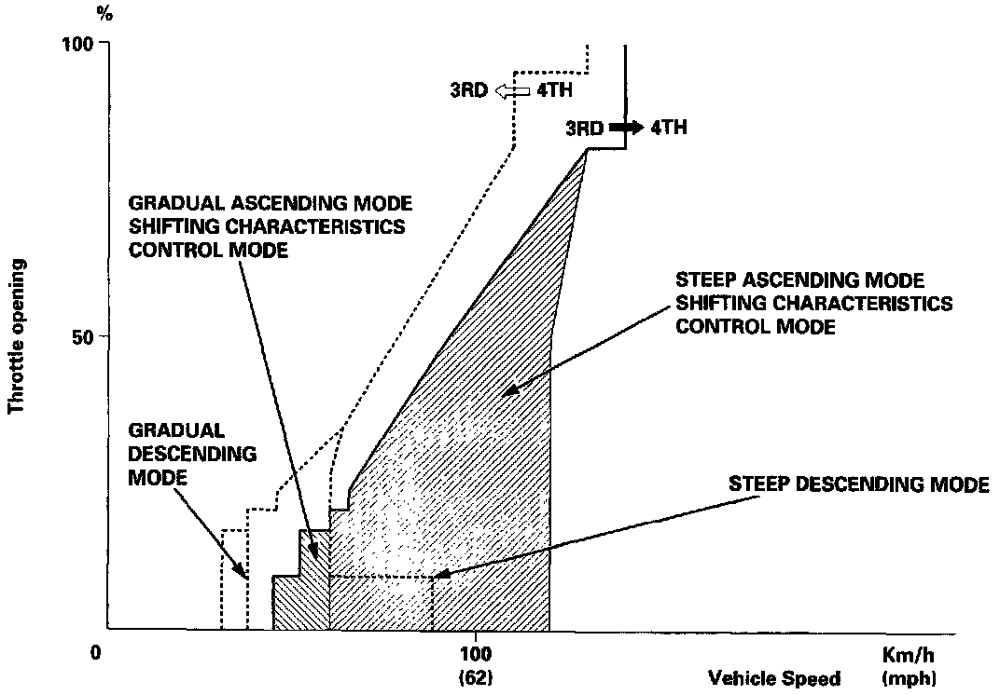

Transmission Control Systems: Description and Operation

The electronic control system consists of the Transmission Control Module (TCM), sensors, and four solenoid valves. Shifting and lock-up are electronically controlled for comfortable driving under all conditions.
The TCM is located below the dashboard, behind the left side kick panel on the driver's side.

Lock-up Control
From sensor input signals, the TCM determines whether to turn the lock-up ON or OFF and activates lock-up control solenoid valve A and/or B accordingly. The combination of driving signals to lock-up control solenoid valves A and B is shown in the table below.

Shift Control
The TCM instantaneously determines which gear should be selected by various signals sent from sensors, and actuates the shift control solenoid valves A and B control shifting. Also, a Grade Logic Control System has been adopted to control shifting in (D4) position while the vehicle is ascending or descending a slope, or reducing speed.

GRADE LOGIC CONTROL SYSTEM
How it works:
The TCM compares actual driving conditions with driving conditions memorized in the TCM, based on the input from the vehicle speed sensor, throttle position sensor, engine coolant temperature sensor, barometric pressure sensor, brake switch signal and shift lever position signal, to control shifting while a vehicle is ascending or descending a slope, or reducing speed.

Ascending Control
When the TCM determines that the vehicle is climbing a hill in (D4) position, the system extends the engagement area of 3rd gear to prevent the transmission from frequently shifting between 3rd and 4th gears, so the vehicle can run smooth and have more power when needed.
NOTE:
- Shift schedules between 3rd and 4th gear stored in the TCM enable the TCM's fuzzy logic to automatically select the most suitable gear according to the magnitude of a gradient.
- Fuzzy logic is a form of artificial intelligence that lets computers respond to changing conditions much like a human mind would.
Descending Control
When the TCM determines that the vehicle is going down a hill in (D4) position, the shift-up speed from 3rd to 4th gear when the throttle is closed becomes faster than the set speed for flat road driving to widen the 3rd gear driving area. This, in combination with engine braking from the deceleration lock-up, achieves smooth driving when the vehicle is descending.
There are two descending modes with different 3rd gear driving areas according to the magnitude of a gradient stored in the TCM.
When the vehicle is in 4th gear, and you are decelerating on a gradual hill, or when you are applying the brakes on a steep hill, the transmission will downshift to 3rd gear. When you accelerate, the transmission will then return to 4th gear.
Deceleration Control
When the vehicle goes around a corner, and needs to decelerate first and then accelerate, the TCM sets the data for deceleration control to reduce the number of times the transmission shifts. When the vehicle is decelerating from speeds above 30 mph (48 km/h), the TCM shifts the transmission from 4th to 2nd earlier than normal to cope with upcoming acceleration.